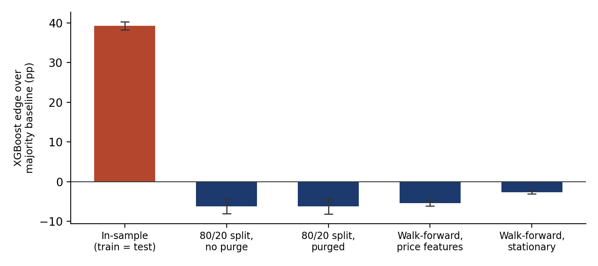
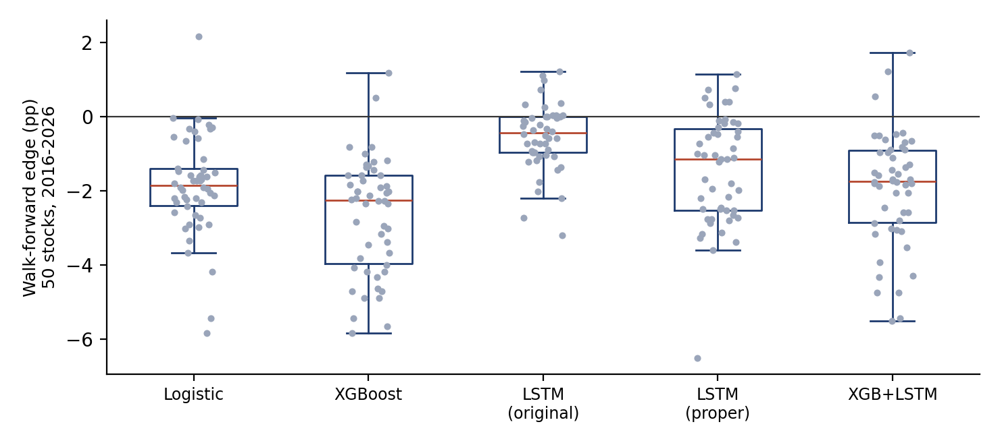
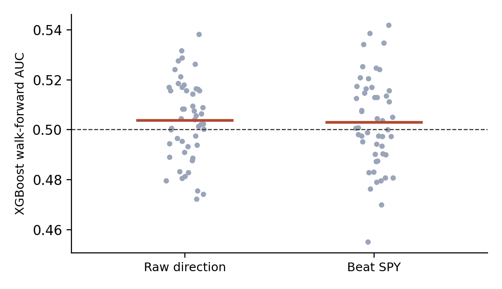
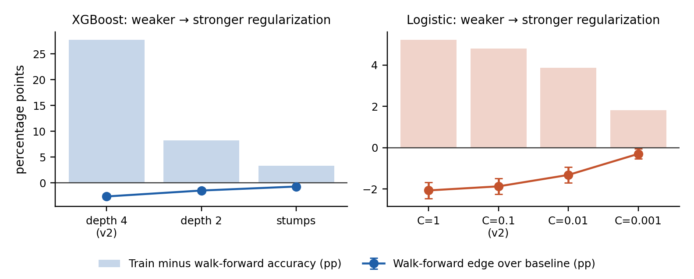

Machine learning is now routine in empirical finance. Gu, Kelly and Xiu (2020) show that flexible models can improve return prediction when evaluated carefully on a large cross-section of stocks. The literature on backtest overfitting (Bailey et al., 2014; Harvey, Liu and Zhu, 2016) and on leakage in financial labels (López de Prado, 2018) shows how easily careless evaluation manufactures performance that is not there.
This paper studies that gap in a concrete system that I built. QuantAI predicts five-day price direction for individual stocks from technical indicators, using an ensemble of XGBoost (Chen and Guestrin, 2016) and an LSTM (Hochreiter and Schmidhuber, 1997). A first version of this paper, on five hand-picked large-cap assets, found that the system's apparent accuracy disappeared under honest evaluation. This version answers the objections that study left open:
I took the 503 constituents of the S&P 500 listed on 4 November 2026, shuffled them with a fixed seed (2026), and kept the first 50 with daily data from early 2010, so that every walk-forward year has at least five years of training history. 6 stocks were skipped for lack of history. The sample spans 11 sectors (Financials 13, Health Care 6, Consumer Discretionary 6, Information Technology 5, Utilities 4, Materials 4, Real Estate 4, Consumer Staples 3, Industrials 3, Energy 1, Communication Services 1); the list is in the appendix. Split- and dividend-adjusted daily bars come from Yahoo Finance for 2010 to October 2026, and SPY supplies the market features and the market-relative label.
The original feature set reproduces QuantAI before its fix: RSI, MACD and its signal and histogram, stochastic RSI, Bollinger %B and width, ATR, SMA(20), EMA(9) and EMA(21), trend flags, distance from SMA(20), a momentum score, on-balance volume, raw open/high/low/close and volume, recent returns and their lags, realised volatility, volume ratios, and SPY's level, return and trend. The stationary set is the fixed version: price-unit quantities are divided by price (ATR, MACD, the EMA spread), on-balance volume becomes a 20-day flow ratio, and all raw price and volume levels are removed. All features use data up to day t only.
The raw label is 1 if the close on day t+5 exceeds the close on day t. The relative label is 1 if the stock's five-day return exceeds SPY's. The raw label inherits the market's upward drift, so the naive baseline is well above 50%; the relative label removes that drift.
All models see standardised features with the scaler fitted on training data only. Logistic regression uses L2 regularisation (C = 0.1). XGBoost uses QuantAI's settings (150 trees, depth 4, learning rate 0.03, subsampling 0.8). The original LSTM is QuantAI's: two layers of 64 units over 10-day windows, trained for 15 full-batch Adam epochs. The proper LSTM has one layer of 32 units with dropout 0.2 and weight decay, trained in mini-batches of 128 for up to 40 epochs, with early stopping (patience 4) on the last 15% of each training window, purged by 5 days, and the best weights restored. The ensemble averages XGBoost and the proper LSTM. No hyperparameters were tuned on test data.
Isolating each choice. On the final 20% of each stock's sample (about the last three years), I score the original feature set three ways: trained on that same window (in-sample), trained on the preceding 80% with no gap, and trained on the preceding 80% with the last 5 labelled days removed (purged). The first comparison isolates training on the test window; the second isolates purging.
Walk-forward. For each year from 2016 to 2026, every model is retrained on all earlier data minus a 5-day purge and scored only on that year. Predictions are pooled across years for each stock.
Metrics and inference. The edge is accuracy minus the accuracy of always predicting the majority class of the training data. I also report AUC, the share of stocks with a positive edge, and the share with a significant Pesaran–Timmermann (1992) test of directional skill at the 5% level, computed on every fifth day so that labels do not overlap (about 2.5 of 50 stocks would pass by chance). Cross-stock means carry 95% t-intervals that treat stocks as independent; because stocks share market moves, these intervals are somewhat too narrow.
The fixed QuantAI. QuantAI now trains its ensemble on 80% of the available history, measures its edge on the remaining 20% (purged), and uses the model in trading only if that edge exceeds its 95% margin of error. I replicate this inside the walk-forward for every stock-year, then record whether the gate opened and how the model did on the following year.
Economic test. A long/flat rule holds a stock when the predicted probability of an up move is at least 0.5, deciding at the close of day t and trading at the close of day t+1, with 0.11% cost per side. For the fixed QuantAI the stock is simply held when the gate is closed, as the live system would then ignore the model.
Table 1 and Figure 1 change one choice at a time. Training on the test window accounts for essentially all of the apparent skill: XGBoost's edge falls from +39.3 [+38.2, +40.3] points in-sample, with an AUC of 0.988, to -6.2 [-8.1, -4.2] on a held-out split. Logistic regression, which can memorise far less, still shows +8.3 points in-sample. Purging the 5 overlapping days changes the held-out edge by only 0.0 points on average: with a five-day label and thousands of training days the overlap is too small to matter. Version 1 of this paper listed purging as a fix without measuring it; this result shows it is not where the damage was. Under the walk-forward, removing price-level features improves XGBoost's edge from -5.4 to -2.7 points, consistent with tree models failing to extrapolate when prices move beyond the training range.

| Evaluation | Edge (pp) | AUC |
|---|---|---|
| XGBoost | ||
| Trained and scored on the same window (in-sample) | +39.3 [+38.2, +40.3] | 0.988 [0.988, 0.989] |
| 80/20 split, no purge | -6.2 [-8.1, -4.2] | 0.514 [0.504, 0.523] |
| 80/20 split, purged | -6.2 [-8.1, -4.2] | 0.516 [0.507, 0.524] |
| Walk-forward, original features (with price levels) | -5.4 [-6.1, -4.6] | 0.501 [0.496, 0.506] |
| Walk-forward, stationary features | -2.7 [-3.1, -2.2] | 0.504 [0.499, 0.508] |
| Logistic regression | ||
| Trained and scored on the same window (in-sample) | +8.3 [+7.4, +9.2] | 0.668 [0.660, 0.676] |
| 80/20 split, no purge | -3.7 [-5.3, -2.1] | 0.526 [0.516, 0.536] |
| 80/20 split, purged | -3.7 [-5.3, -2.1] | 0.526 [0.517, 0.536] |
| Walk-forward, original features (with price levels) | -3.7 [-4.3, -3.1] | 0.502 [0.496, 0.507] |
| Walk-forward, stationary features | -1.9 [-2.3, -1.5] | 0.504 [0.499, 0.509] |
Table 2 and Figure 2 compare models under the walk-forward with stationary features. Every model's mean edge is negative, and few stocks show a positive edge for any model. The original LSTM predicts "up" on 93% of days: it has learned the class prior, which is why its edge (-0.5) is close to zero rather than evidence of skill. Training the LSTM properly does not change the picture: its edge is -1.4 [-1.9, -1.0] points. Its AUC of 0.508 [0.503, 0.513] is the highest of the models and its interval excludes 0.5, but an AUC of about 0.51 is far too small to trade on, and the interval is optimistic because stocks are correlated. The Pesaran–Timmermann test is significant for 12% of stocks for the proper LSTM and between 6% and 12% across models, against 5% expected by chance. That is weak at best, given that five models were tried. The simple logistic regression (-1.9) does no worse than XGBoost (-2.7), so the extra flexibility buys nothing.

| Model | Edge (pp) | AUC | Edge > 0 | PT < 0.05 | Says up |
|---|---|---|---|---|---|
| Logistic regression | -1.9 [-2.3, -1.5] | 0.504 [0.499, 0.509] | 2% | 12% | 78% |
| XGBoost | -2.7 [-3.1, -2.2] | 0.504 [0.499, 0.508] | 4% | 8% | 71% |
| LSTM, original training | -0.5 [-0.8, -0.3] | 0.498 [0.493, 0.504] | 20% | 6% | 93% |
| LSTM, proper training | -1.4 [-1.9, -1.0] | 0.508 [0.503, 0.513] | 14% | 12% | 80% |
| XGBoost + proper LSTM | -1.9 [-2.4, -1.5] | 0.506 [0.501, 0.511] | 6% | 12% | 76% |
One might suspect the raw label hides skill behind the market's drift. With the relative label, the baseline falls to about 50% and the edge is +0.2 [-0.4, +0.8] points for XGBoost and +0.2 [-0.4, +0.8] for logistic regression. That is zero within the interval; 60% of stocks show a positive edge, close to the half expected by chance. AUC is 0.503 (Table 3, Figure 3).

| Label | Model | Edge (pp) | AUC | Edge > 0 |
|---|---|---|---|---|
| Raw: price up after 5 days | XGBoost | -2.7 [-3.1, -2.2] | 0.504 [0.499, 0.508] | 4% |
| Raw: price up after 5 days | Logistic | -1.9 [-2.3, -1.5] | 0.504 [0.499, 0.509] | 2% |
| Relative: beats SPY over 5 days | XGBoost | +0.2 [-0.4, +0.8] | 0.503 [0.498, 0.508] | 60% |
| Relative: beats SPY over 5 days | Logistic | +0.2 [-0.4, +0.8] | 0.502 [0.497, 0.508] | 64% |
The corrected system's gate opened in 13 of 550 stock-years (2.4%), for 9 different stocks. When it opened, the model's edge over the following year was -5.6 [-14.5, +3.3] points, no better than in the years it stayed closed (-1.5 [-1.9, -1.1]). The rare passes are therefore false positives, as expected when nearly every model has no skill: the gate's value is in how seldom it opens. Economically, the long/flat rule built on the ensemble lowers the Sharpe ratio relative to buy-and-hold by -0.198 [-0.242, -0.154] and beats it for 10% of stocks. The gated system stays in the market 99% of the time and matches buy-and-hold almost exactly (Sharpe difference -0.009 [-0.018, +0.000]). The fix does not create an edge; it stops a signal-free model from costing money.
| Measure | Value |
|---|---|
| Stock-years where the gate opened | 13 of 550 (2.4%) |
| Edge in the following year when the gate opened (pp) | -5.6 [-14.5, +3.3] |
| Edge in the following year when it stayed closed (pp) | -1.5 [-1.9, -1.1] |
| Ensemble long/flat: Sharpe minus buy-and-hold | -0.198 [-0.242, -0.154] |
| Ensemble long/flat: stocks beating buy-and-hold | 10% |
| Fixed QuantAI (gated): Sharpe minus buy-and-hold | -0.009 [-0.018, +0.000] |
A natural reading of Sections 5.1 and 5.2 is that the models overfit: they capture noise in the training data, so they fail out of sample, and a more restricted model might do better. Table 5 and Figure 4 test this directly. On the same 50 stocks, stationary features, raw label and purged walk-forward, I fit XGBoost with progressively shallower trees, stronger penalties and larger minimum leaf sizes, down to single-split stumps, and logistic regression with the L2 penalty strengthened a thousandfold, an L1 (sparse) variant, and a four-feature version. I record each model's accuracy on its own training data and its walk-forward accuracy. The difference between the two measures how much the model memorises.
The overfitting diagnosis is correct. The XGBoost configuration used by QuantAI fits its training data at 80.1% accuracy but scores 52.4% walk-forward, a gap of 27.7 points. Restricting it to stumps closes the gap to 3.3 points. Its walk-forward edge rises in step, from -2.6 to -0.7 points; for logistic regression it rises from -1.9 at C = 0.1 to -0.3 at C = 0.001. Restricting the models in-sample does improve them out of sample.
It does not, however, produce skill. No setting has a 95% interval for the edge above zero; the best mean edge, -0.3 points, is still negative, and it is the best of ten settings chosen with hindsight. AUC stays between 0.481 and 0.504 throughout: at or slightly below the 0.5 of random ranking, and never meaningfully above it. The mechanism is visible in the last column of Table 5: as regularization tightens, the models predict an up move on more days, from 71% for the default XGBoost to 91% for stumps and 94% for the most penalised logistic regression. They converge on the naive baseline. Overfitting explains why the original model did worse than the baseline, but not why nothing beats it: with these features, a model that fits less loses less, and the best it can do is to stop pretending and predict the base rate.

| Model | Train | WF | Gap | Edge (pp) | AUC | Says up |
|---|---|---|---|---|---|---|
| XGBoost, depth 4 (as in Table 2) | 80.1 | 52.4 | 27.7 | -2.6 [-3.0, -2.2] | 0.504 | 71% |
| XGBoost, depth 2 | 61.8 | 53.6 | 8.2 | -1.5 [-1.8, -1.1] | 0.501 | 83% |
| XGBoost, stumps (depth 1) | 57.7 | 54.3 | 3.3 | -0.7 [-1.0, -0.4] | 0.500 | 91% |
| XGBoost, stumps, 4 features | 56.9 | 54.4 | 2.5 | -0.6 [-0.9, -0.3] | 0.497 | 93% |
| Logistic, C = 1 | 58.2 | 53.0 | 5.2 | -2.1 [-2.5, -1.7] | 0.503 | 76% |
| Logistic, C = 0.1 (as in Table 2) | 58.0 | 53.2 | 4.8 | -1.9 [-2.3, -1.5] | 0.504 | 78% |
| Logistic, C = 0.01 | 57.6 | 53.7 | 3.9 | -1.3 [-1.7, -0.9] | 0.504 | 83% |
| Logistic, C = 0.001 | 56.5 | 54.7 | 1.8 | -0.3 [-0.5, -0.1] | 0.503 | 94% |
| Logistic, L1, C = 0.01 | 55.9 | 54.6 | 1.3 | -0.4 [-0.7, -0.1] | 0.481 | 95% |
| Logistic, 4 features | 56.2 | 54.4 | 1.8 | -0.6 [-0.8, -0.4] | 0.500 | 92% |
Three lessons carry over to any similar system. First, the decisive error is scoring a model on data it was trained on; in QuantAI this happened silently inside the backtester, and it inflated the edge by about 45.5 points. Second, every accuracy figure needs its naive baseline beside it: on rising stocks, 55% accuracy is routinely worse than always predicting "up". Third, a model should earn its place in trading by beating that baseline by more than its margin of error. Because QuantAI now enforces this, it does no harm even though it has no edge. A fourth lesson comes from Section 5.5: the gap between in-sample and out-of-sample accuracy shows whether a model is overfitting, but closing that gap does not create signal. Regularization makes a model honest about what it knows, and here that turns out to be very little.
The negative result is about the problem, not only the models: five-day direction from daily technical indicators appears close to unpredictable for large U.S. stocks. More promising targets are those with established predictability, such as volatility (Corsi, 2009), and cross-sectional questions of which stocks will outperform others, where Gu, Kelly and Xiu (2020) find gains from machine learning. Those are the next steps for this project.
The universe is drawn from current S&P 500 members, so firms that were removed or failed since 2010 are absent; this survivorship bias favours buy-and-hold and is unlikely to change the directional results. Cross-stock intervals assume independence and are therefore too narrow. Only one horizon is studied, hyperparameters are not tuned beyond the regularization sweep in Section 5.5 (by design, to evaluate the system as built), exits are checked only at daily closes, and Yahoo Finance data are convenient rather than research-grade.
An indicator-based ML ensemble that appears 39.3 points better than a naive baseline when scored on its own training window shows no edge on 50 randomly chosen stocks once evaluated honestly, whichever model, feature set or label is used. Training on the test window, not label overlap, is what manufactured the apparent skill, and regularizing the models removes their overfitting without revealing any edge. The corrected system recognises that it has no edge and keeps the model out of trading, which is the right behaviour for a model without signal.
All results, tables and figures are produced by paper/v2/experiment_v2.py, paper/v3/regularization.py, paper/v3/make_fig4.py and paper/v3/build_paper_v3.py in the QuantAI repository (Python 3.11; pandas, scikit-learn, XGBoost, PyTorch, yfinance, SciPy). The constituent list used for sampling is saved alongside the code, and all random seeds are fixed.
Bailey, D. H., Borwein, J. M., López de Prado, M., and Zhu, Q. J. (2014). Pseudo-mathematics and financial charlatanism: The effects of backtest overfitting on out-of-sample performance. Notices of the American Mathematical Society, 61(5), 458–471.
Chen, T., and Guestrin, C. (2016). XGBoost: A scalable tree boosting system. In Proceedings of the 22nd ACM SIGKDD International Conference on Knowledge Discovery and Data Mining, 785–794.
Corsi, F. (2009). A simple approximate long-memory model of realized volatility. Journal of Financial Econometrics, 7(2), 174–196.
Gu, S., Kelly, B., and Xiu, D. (2020). Empirical asset pricing via machine learning. Review of Financial Studies, 33(5), 2223–2273.
Harvey, C. R., Liu, Y., and Zhu, H. (2016). …and the cross-section of expected returns. Review of Financial Studies, 29(1), 5–68.
Hochreiter, S., and Schmidhuber, J. (1997). Long short-term memory. Neural Computation, 9(8), 1735–1780.
López de Prado, M. (2018). Advances in Financial Machine Learning. Hoboken, NJ: Wiley.
Pesaran, M. H., and Timmermann, A. (1992). A simple nonparametric test of predictive performance. Journal of Business & Economic Statistics, 10(4), 461–465.
| ACGL (Financials) | ADI (Information Technology) | AEP (Utilities) |
| AFL (Financials) | AMZN (Consumer Discretionary) | APH (Information Technology) |
| AVY (Materials) | AWK (Utilities) | BAC (Financials) |
| BKNG (Consumer Discretionary) | BNY (Financials) | CSGP (Real Estate) |
| DLR (Real Estate) | DXCM (Health Care) | ECHO (Communication Services) |
| EXC (Utilities) | EXPD (Industrials) | FTNT (Information Technology) |
| GILD (Health Care) | GPN (Financials) | GRMN (Consumer Discretionary) |
| GS (Financials) | HST (Real Estate) | ICE (Financials) |
| IFF (Materials) | IT (Information Technology) | IVZ (Financials) |
| KEY (Financials) | LH (Health Care) | LUV (Industrials) |
| MA (Financials) | MAA (Real Estate) | MKC (Consumer Staples) |
| MSCI (Financials) | NDAQ (Financials) | NEE (Utilities) |
| NKE (Consumer Discretionary) | OKE (Energy) | PHM (Consumer Discretionary) |
| QCOM (Information Technology) | SHW (Materials) | STLD (Materials) |
| SYY (Consumer Staples) | TECH (Health Care) | TPR (Consumer Discretionary) |
| TSN (Consumer Staples) | UHS (Health Care) | WAB (Industrials) |
| WRB (Financials) | ZBH (Health Care) |